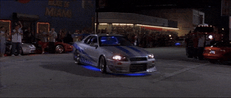

The Movie Icon
The story of how I became intrested in this car is extremely random, so bear with me.
How I found out about this car wasn't through Fast & Furious, it was through a completley different piece of car media.
I found out about it through Rocket League, yes, the car soccer game.
I had no clue what the car was, but what I did know was that it was the best looking car I'd ever seen in the game.
So for no real reason other than a love for how the car looked, I paid $10 for some virtual credits to buy this car, which was part of a Fast & Furious DLC promotion.
I paid ten real world US dollars to play car soccer with this random car from a movie I never watched, just beacuse I thought it looked that good.
I have no regrets.
On a more serious note, I still it looks great till this day, and the all black version that Takeshi Nakazato drives in Initial D is one of my favorite cars in the show.
Maybe I'll actually watch Fast & Furious one day too, just to see this car in action...